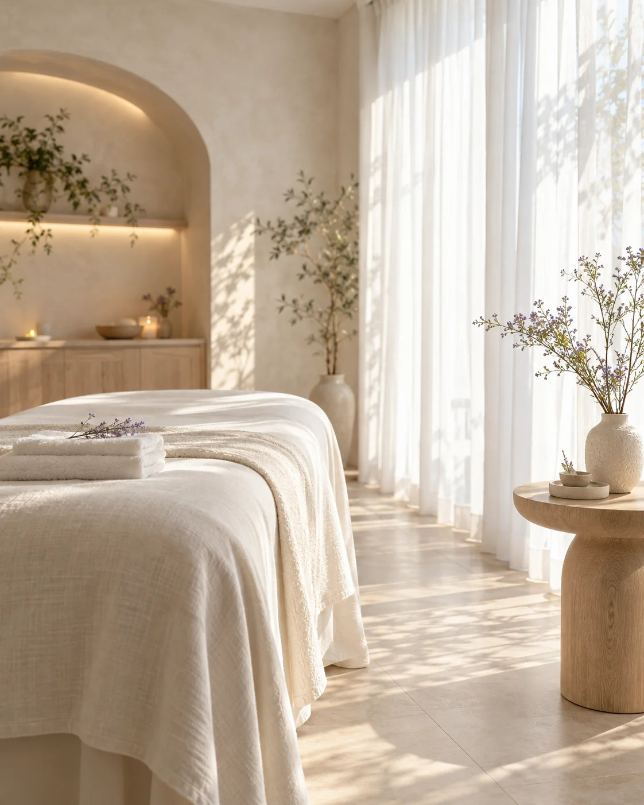
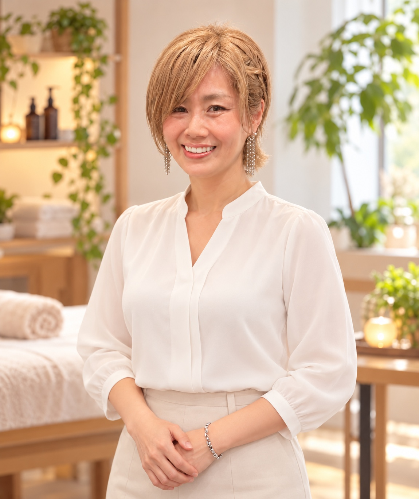

01 / GENTLE
押さない、揉まない、
引っ張らない。
さとう式リンパケアをベースに、軽いタッチで身体の緊張をやさしくゆるめます。強い刺激が苦手な方も、まずはご相談ください。
A LITTLE LIGHT FOR YOURSELF
がんばる毎日に、やさしい余白を。
お顔も、からだも、心までほどけるような
あなたのためのリラクゼーション。
押さない・揉まない・引っ張らない
さとう式リンパケアをベースにした、やさしい施術

サロンのイメージLet your light in.
HOW ARE YOU FEELING?
こんな小さなサイン、感じていませんか？
01気づくと、ぎゅっと食いしばっている
02肩や首まわりに、力が入りやすい
03お顔のこわばりが気になる
04忙しくて、自分をいたわる時間がない
少し立ち止まって、力を抜いてみませんか。
その時間に、Luceがそっと寄り添います。
OUR CONCEPT
Luce（ルーチェ）は、イタリア語で「光」。
日々の忙しさの中で、少し遠くなっていた
自分の感覚に、そっと目を向ける場所です。
大切にしているのは、無理に変えようとすることより、
からだの声を聞きながら、やさしく寄り添うこと。
心地よいと感じるペースで、緊張をゆるめる。
そんな穏やかなひとときをお届けします。
THE LUCE TOUCH
01 / GENTLE
さとう式リンパケアをベースに、軽いタッチで身体の緊張をやさしくゆるめます。強い刺激が苦手な方も、まずはご相談ください。
02 / PERSONAL
気になることや、その日の体調を丁寧にお聞きします。触れる強さやペースを確かめながら、無理のない施術を進めます。
03 / EXPERIENCE
歯科衛生士歴31年のセラピストが担当。口腔内カウンターストレインの資格を活かし、お悩みに寄り添います。
※リラクゼーションを目的としたケアです。医療行為ではなく、感じ方には個人差があります。
YOUR TIME AT LUCE
ご希望のメニュー・日時をお知らせください。迷っている方もご相談いただけます。
お悩みや体調をお伺いし、当日の施術内容を一緒に確認します。
心地よさを確かめながらケア。気になることはいつでもお伝えください。
施術後の感覚をお伺いし、日常で自分をいたわるヒントをお伝えします。

Luce セラピスト
Aya | 寺地 彩
あなたに寄り添う、手のぬくもり。
YOUR THERAPIST
歯科衛生士として31年、お口の健康に向き合ってきました。その経験を土台に、今はセラピストとして、お顔とからだをやさしくケアしています。
がんばりすぎていることにも、気づかない毎日。ここでは肩の力を抜いて、ありのままのあなたでお過ごしください。
QUESTIONS & ANSWERS
押さない・揉まない・引っ張らないケアを基本にしています。感じ方には個人差がありますので、苦手な刺激やご不安は事前にお伝えください。施術中も心地よさを確認しながら進めます。
食いしばりやお顔まわりが気になる方は部分ケア、からだ全体をゆるめたい方は全身ケアをご検討ください。迷う場合は、予約時に気になることをお知らせください。
すべてには含まれません。「小顔ケア」は口腔内施術なし、「全身＋口腔内ケア」は口腔内ケアを含むメニューです。その他のメニューの詳細も予約時にご確認ください。口腔内ケアは説明と同意のうえで行います。
はい、表示時間にはカウンセリングが含まれます。施術内容や当日の流れによる所要時間の詳細は、予約時にご確認ください。
通院中・治療中の方や妊娠中の方は、事前に主治医へご相談のうえ、予約時にお知らせください。当日の体調によっては、施術を控えさせていただく場合があります。
A MOMENT FOR YOU
がんばるあなたの毎日に、ひとすじの光を。
Luceで、ほっとひと息つきませんか。
現在、ご予約・ご相談はInstagramのDMで承っています。LuceのInstagramプロフィールの「メッセージ」からご連絡ください。
メニューのご相談も、お気軽にどうぞ。